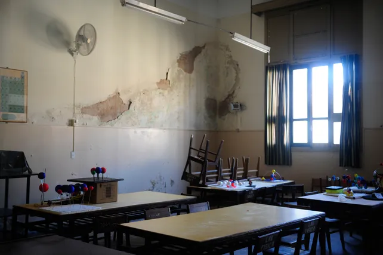

Crece el malestar de padres del Politécnico por el extenso paro en colegios de la UNR
Expresaron su preocupación por la educación de sus hijos. Los docentes arrancaron este lunes la segunda semana de paros de este ciclo lectivo.
"La educación pública se defiende con los chicos en el aula". Padres de alumnos del Instituto Superior Politécnico eligieron esta frase para expresar su malestar por la interrupción de las clases en las escuelas secundarias que dependen de la Universidad Nacional de Rosario (UNR). Tras el inicio este lunes de la segunda semana de paros del año por parte de los docentes, manifestaron estar "preocupados" por la educación de sus hijos.
A través de un comunicado los padres autoconvocados dejaron en claro su desacuerdo con la Asociación Gremial de Docentes e Investigadores de la UNR (Coad), que desde este lunes lleva adelante una huelga general de una semana en reclamo de mejoras salariales. Los padres sostienen que un paro de una semana es "una medida de gravedad extrema", y pide que para protestar recurran a "medidas creativas y alternativas". También exigen al gobierno que se ponga "a la altura de las circunstancias" y que realice una propuesta salarial "acorde a la realidad inflacionaria".
La Coad rechaza la propuesta del Ministerio de Educación de la Nación de un aumento del 16% en marzo, 7% en mayo y 7% en junio, además de un monitoreo salarial en mayo y una reapertura de la discusión entre las partes en junio.
La extensa medida de fuerza de los docentes universitarios rosarinos fue votada en asamblea por una amplia mayoría de los profesores afiliados a la Coad. Así las cosas, desde este lunes se desarrolla un paro total de actividades en las 12 facultades y cuatro colegios preuniversitarios que dependen de la UNR.
El ciclo lectivo en la UNR arrancó este año con serias dificultades. Es que ya se registró otra larga huelga de los docentes: duró también una semana, entre 27 al 31 de marzo.
En rigor, este conflicto gremial y los extensos paros de Coad se vienen sucediendo año tras año. Por eso los padres aseguran que esta situación los "inquieta sobremanera". "Sabemos ya por experiencia que las semanas perdidas nunca son recuperadas", afirman.
"Sin perjuicio de los contenidos que se pierden y desde ya lamentamos, vemos con total preocupación que la reiteración de estas medidas hacen que los chicos pierdan hábitos e interés por el estudio, además de verlos frustrados y decepcionados", advierten.
El comunicado completo de los padres:
"Somos un grupo de padres de colegios preuniversitarios que nos autoconvocamos preocupados por la educación de nuestros hijos.
Vemos que a poco de iniciar el ciclo lectivo ya contamos con dos semanas de paro y aún el conflicto no tiene miras de resolverse.
No hemos escuchado un trabajo mancomunado de las partes para terminar con el conflicto que se sucede año tras año, lo que nos inquieta de sobremanera. Sabemos ya por experiencia que las semanas perdidas nunca son recuperadas.
Sin perjuicio de los contenidos que se pierden y desde ya lamentamos, vemos con total preocupación que la reiteración de estas medidas hacen que los chicos pierdan hábitos e interés por el estudio además de verlos frustrados y decepcionados.
Es triste ver la cantidad de chicos abandonar estos colegios preuniversitarios luego de haber hecho un esfuerzo importante para el ingreso en virtud de la reiteración de las medidas de fuerza.
Solicitamos a la comunidad docente a recurrir a medidas creativas y alternativas. Una semana de paro resulta una medida de gravedad extrema en adolescentes ocasionando un perjuicio irreparable en los menores como lo expresáramos precedentemente.
También convocamos al gobierno estar a la altura de las circunstancias a realizar sus mejores esfuerzos para elevar propuestas superadoras y acordes a la realidad inflacionaria que vivimos para poder concluir el conflicto que tan mal hace a la comunidad educativa.
Coincidimos con el rector en la relevancia de crear escuelas nuevas pero entendemos que primero se debe atender a las necesidades de las que ya están en funcionamiento. De otra forma, nos vemos en el lamentable escenario que nos toca vivir hoy donde no funciona ni una ni otra.
La educación pública se defiende con los chicos en el aula es por ello que instamos a trabajar para que vuelvan a clases".